Some Other Settings#
Making Questions Required
For Likert scale and text response surveys, you can add required: true directly after the individual question (see demographics_block.js as an example).
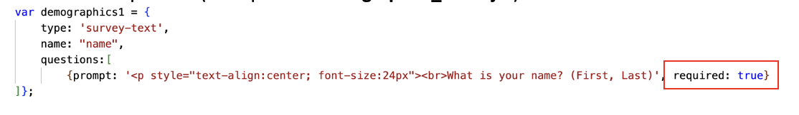
You can add the following codes at the end to ensure all the questions within the block are answered (see 2a. DASSY_likert_block.js as an example).
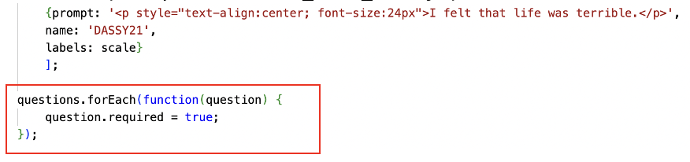
For drop-down box, it needs to be modified in the jspsych-survey-select.js file in the jspsych folder and then the plugins folder.
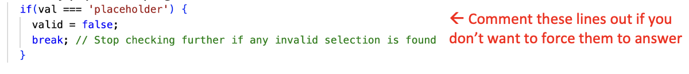
Enforcing the Correct Answering Format
You can also ask the participants to fill in digits only (or digits with a certain length) in surveys with text response:
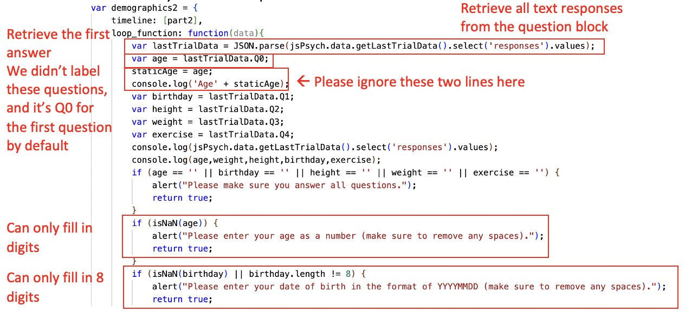
Adding Conditional Questions
Follow these steps to ask participants additional questions based on their answers. Using 16b. SSPDG_likert_block.js as an example:
The initial question:
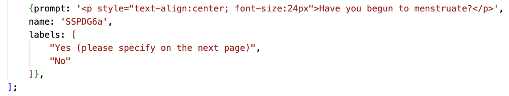
Create a new question block (called “SSPDG6b” here) for the additional question:
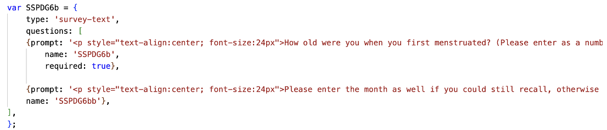
Retrieve the participant’s answer to the initial question:
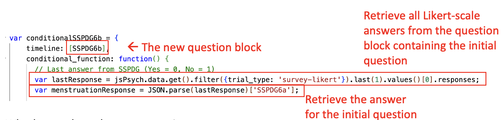
Determine whether to show the additional question:
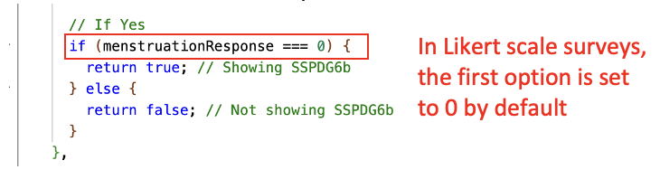
Add the new block to the timeline at the end:
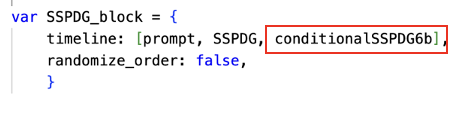
Participant-Specific Questionnaires
Use the following steps to assign questionnaires based on participant characteristics.
Decide how to categorise your participants. In the Safety Learning project, we use age (above or below 18) and sex (male or female), captured in the demographic questionnaire at the start of the survey.
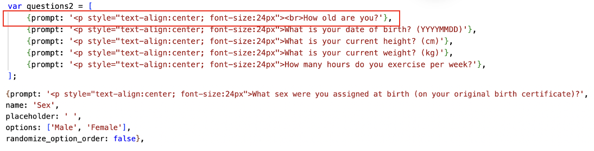
To retrieve relevant answers from “1. demographics_block.js”, create a global variable for each category.
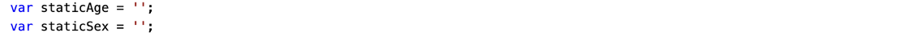
Then save the corresponding answers into those variables.
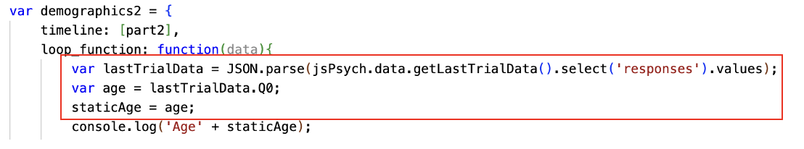
Assign different questionnaires to different participant categories:
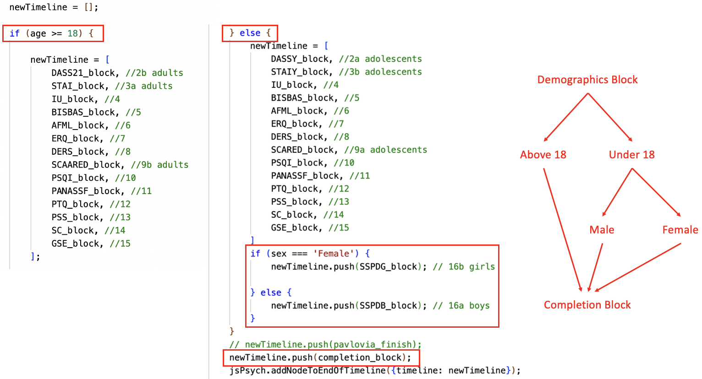